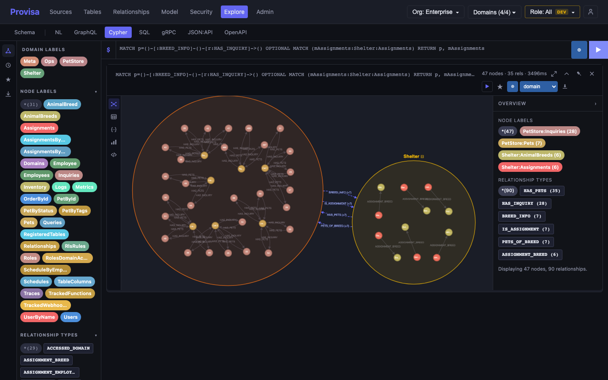

Three languages, one schema
GraphQL, Cypher, and SQL all query the same federated schema and retarget to any source dialect. Governance applies identically across all three — not three integrations, but one.
The active semantic layer
Query 46 heterogeneous data sources with GraphQL, Cypher, or SQL — all three over the same federated schema, on the engine you choose: Trino, DuckDB, ClickHouse, Postgres, Snowflake, Databricks, or BigQuery, or the embedded Trino-compatible engine that ships in the box. Cross-source joins fan out through federation; single-source reads and writes route direct to the driver, transactional and sub-100ms. Reach it over pgwire, Bolt, Arrow Flight, gRPC, JDBC, REST, WebSocket, Airport, or an MCP server — the same governed schema, every way in.
# psql speaks to Provisa as if it were Postgres — on port 5439
psql -h localhost -p 5439 -U analyst
# One SQL query, joined across Postgres, Mongo, and Elasticsearch
SELECT c.name, o.total, t.trace_id
FROM customers c
JOIN orders o ON o.customer_id = c.id
JOIN queries t ON t.actor = c.email
WHERE o.total > 1000;
# RLS, masking, and approval already applied. Nothing to remember.The instant API, the legal join paths, the governance rules, and the telemetry that audits every query all fall out of one model — the registration that describes your data is the same one that operates, governs, and audits it. The federation engine and the data sources beneath are yours to choose.
GraphQL, Cypher, and SQL all query the same federated schema and retarget to any source dialect. Governance applies identically across all three — not three integrations, but one.
Provisa carries analytical and transactional flows through the same governed API: cross-source reads fan out through federation; writes and single-source reads route direct to the driver — transactional and sub-100ms.
Single-source queries bypass federation entirely. Materialized views record the transform that built them, so queries are transparently rewritten onto a fresh MV — partial join matches included. Hot lookups inline as VALUES CTEs.
Query interfaces & wire protocols
The query language and the wire protocol are independent choices — governance behaves identically across every combination.
Per-role schemas with field-level visibility, cursor pagination, and aggregates. Schema-constrained to registered relationships — valid by construction. Apollo APQ included.
Full SQL over federated data — correlated subqueries and all. Single-source queries bypass federation entirely for sub-100ms latency.
Graph queries over the same federated schema. Traverse relationships as edges, union sources, walk variable-length paths — identical governance.
Any Postgres client (psql, DBeaver, DataGrip, pandas read_sql) connects on port 5439. pg_catalog answered in-memory so schema browsers just work.
Neo4j Browser, Bloom, and official drivers run Cypher over Bolt. Each role surfaces as a provisa_<role> database.
High-throughput columnar streaming over gRPC; accepts GraphQL or SQL. Unbounded result sets, no server-side materialization.
Auto-generated .proto from the registered schema — typed query and insert RPCs per table, streamed responses.
BI tools (Tableau, Power BI, DBeaver) over JDBC; JSON:API 1.1 at /data/jsonapi/{table} with sparse fieldsets and filter expressions.
NL→SQL/Cypher/GraphQL powered by Claude, with an interactive validation loop before anything executes.
A Model Context Protocol server — stdio and remote Streamable HTTP — lets AI agents like Claude query your governed, federated data as tools. The OAuth token maps to a role, so every call is governed; agents get no bypass.
Any DuckDB client attaches Provisa as a database — ATTACH 'grpc://host' AS p (TYPE AIRPORT) — and queries the governed federated schema. Filters and projection push down; writes update by primary key.
Subscriptions stream near-real-time change events. Backends: Postgres native, MongoDB native, CDC, or polling — also fanned out over Kafka.

Security model
Governance is applied uniformly — there is no query path that bypasses it. Add a source, column, or relationship and every layer applies automatically.
Schema browsers only ever see what the role is allowed to see.
Anonymous surface is explicit, never accidental.
Roles reach only the domains registered to them.
Per-table, per-role WHERE injection — inherited recursively.
Regex, constant, or truncate masking with role-based bypass.
Pre-execution ABAC hook over webhook, gRPC, or unix socket.
Relationships are governed too — explore with guardrails. A JOIN, or a graph traversal, is legal only if it matches a registered, approved relationship; unapproved paths are rejected and logged. So the query and graph explorers let people roam the model freely — and let AI agents discover what connects to what — while every path stays inside the edges policy sanctioned. Each relationship carries a human- and agent-readable reason for why the traversal exists.
And it's a per-role capability: the guardrail is a single flag on the role. Leave it on for analysts and agents who should stay on the rails; take the training wheels off for a trusted role and it writes unconstrained JOINs across the whole federated schema — same governed path, just without the relationship guard.
Data sources
Graph and RDF sources are first-class, not adapters. Register REST, GraphQL, gRPC, WebSocket, or RSS endpoints as governed tables — federated joins across API and relational sources work transparently.
You don't register files — you register a location. Point Provisa
at a folder, a bucket, or a SharePoint site and it crawls the whole tree
recursively, discovers every file, and registers each as a governed table.
Not just CSV and Parquet — Excel workbooks, and even
Word, PowerPoint, HTML, and Markdown documents converted to
tables. Over local disk, s3://, ftp://,
sftp://, or SharePoint.
Connect SharePoint and its lists enumerate as schemas you can query. Run a Splunk search and the results come back as a table you can JOIN to your business data. A live Google Sheet is just another table. Each lands under the same RLS, masking, and relationship rules as everything else — a data lake that's governed the moment it exists, not months later.

Observability as data. Traces, metrics, and logs are
collected via OpenTelemetry, compacted into Iceberg, and registered as
queryable tables — join customers to queries to
see who ran what and how long it took.
Materialized views
Build a materialized view over a view, a source, or another MV — a dependency graph of derived datasets from raw source to final analytics table. No orchestration DAG to write or babysit.
MVs stack on views and other MVs. Your whole analytics layer becomes one declarative graph — the same model that describes and governs your data.
Each MV records the SQL or join that built it and the input signals it read (Iceberg snapshot, RDB watermark). Queries transparently rewrite onto a fresh MV — partial-join matches included.
An MV rebuilds only when an upstream input actually changed. A change fans out through the graph to its dependents — demand-driven, not recompute-everything.
Or on a TTL / interval when time, not data, is the trigger. Freshness and calendars are the only knobs — no hand-maintained schedule.
Governance still applies to every derived dataset: an MV is a governed table like any other, so RLS, masking, and relationship rules hold all the way up the graph.
Enterprise-ready
The embedded profile ships the entire runnable system — precompiled UI and all — as a single Python wheel. Regulated and airgapped orgs already trust Artifactory-as-PyPI, so there's no new supply chain to approve: no Docker registry to mirror, no JVM, no root.
# One wheel. Everything inside.
pip install "provisa[embedded]"
provisa run
# Federate against your own engine when you want scale-out
export TRINO_HOST=trino.internal
export TRINO_PORT=8080
provisa runYour model, semantics, and governance live above the infrastructure, not inside it. Swap the engine — embedded to Trino to your warehouse; new CTO, new strategy, switch it to Databricks — the queries and policies don't change. Re-point a table from Oracle to Postgres, or MongoDB to Snowflake, and consumers never see it move.
That turns data modernization into an incremental effort instead of a big-bang cutover: migrate sources table by table behind a stable governed API, with one uniform governance model applying to legacy and modern sources alike throughout the transition.
Performance needs fragmentation — the right engine per workload, materialized copies at the right granularity. Consumers need one coherent model. The old cost of fragmenting the physical was fragmenting the logical too: a pile of models with clashing objectives and granularity, physical detail bleeding into logical design.
Provisa splits them. Specialized engines and materialized views underneath, one governed logical model on top — and the physical never bleeds into the contract your consumers see. The knobs that fragment for speed live in the same declarative model that keeps you coherent, so going faster never spawns a second modeling mess.
Give a domain its own owner and scoped rights to build it: register sources, publish tables, wire relationships, ship views — all inside their domain, none of it reaching another. Central policy still governs every query; authorship is federated, enforcement stays absolute. Optional — off by default, on when you need it.
Analysts and developers work freely in a dev lane — register sources, publish tables, wire relationships. Their changes export as a unified-diff config patch that flows to test, then prod, reviewed in git like any pull request. Because the estate is declarative, promotion is a diff, not a migration.
Where a release also moves data, a materialized view can carry the transform — and land its output into a real source table, not just the internal store. True data migrations may still call for imperative scripts outside Provisa — the model promotes cleanly; the heavy data movement is yours to run.
Get Provisa
Signed desktop installers for every OS, or pip install the
embedded runtime. The native tier boots immediately — no Docker, no JVM.
Preview builds; join the list for the general-availability release.
Looking for the demo build, JDBC driver, or a specific version? Browse all releases →
The whole runnable system — precompiled UI included — as a single wheel. Airgap-ready over an Artifactory PyPI mirror: no Docker, no JVM, no root.
Federate against your own engine any time with
TRINO_HOST/TRINO_PORT.
# One wheel. Everything inside.
pip install "provisa[embedded]"
provisa run
# Requires CPython 3.12
python --version # Python 3.12.xDeploy anywhere
Double-click on your desktop, pip install in an airgap, or
provision a cluster with the tooling your ops team already runs.
Signed macOS, Windows, and Linux installers — each with a one-click demo build that boots a sample stack you can query immediately.
pip install "provisa[embedded]" — the whole runnable system, precompiled UI included. Airgap-ready over Artifactory. No Docker, no JVM, no root.
A production Helm chart deploys the control plane, workers, and engine to any cluster — scale the federation tier horizontally behind one governed API.
Terraform modules for AWS, Azure, and GCP stand up a VM or cluster deployment end to end.
One governed path for analytical, application, and human data movement.